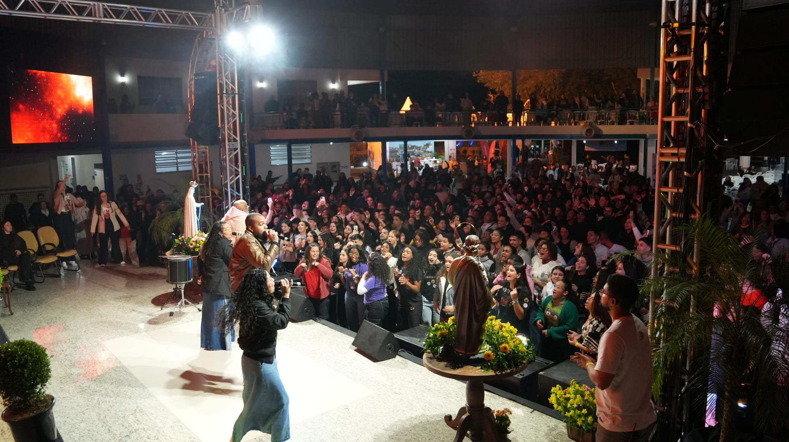
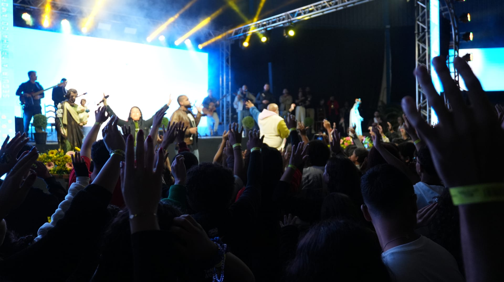
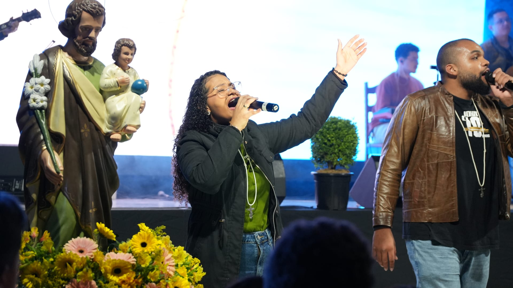
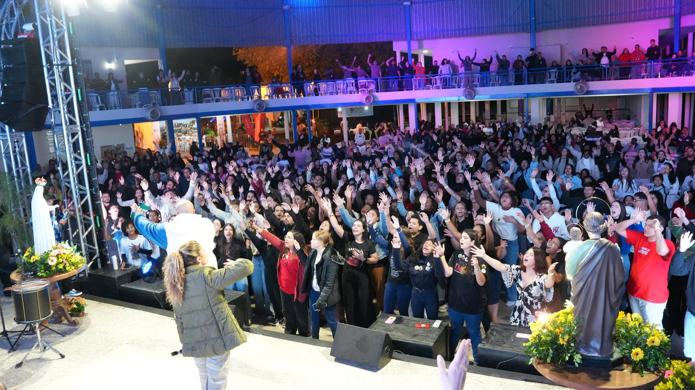
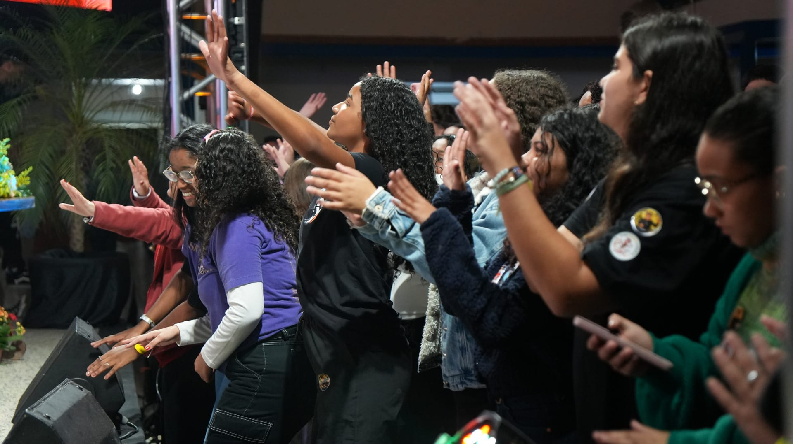
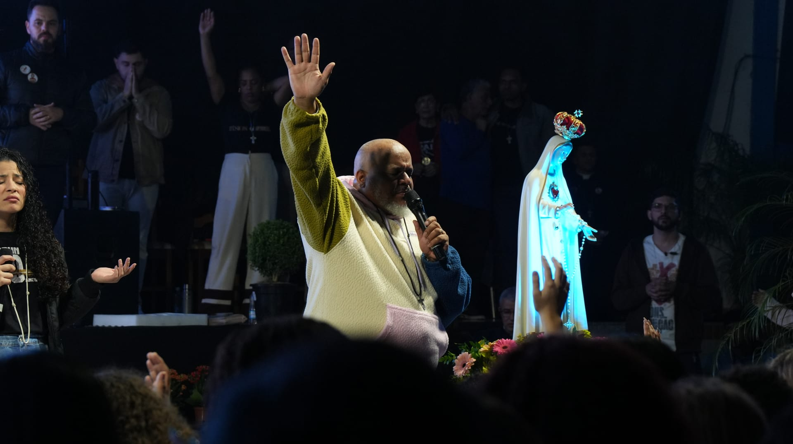
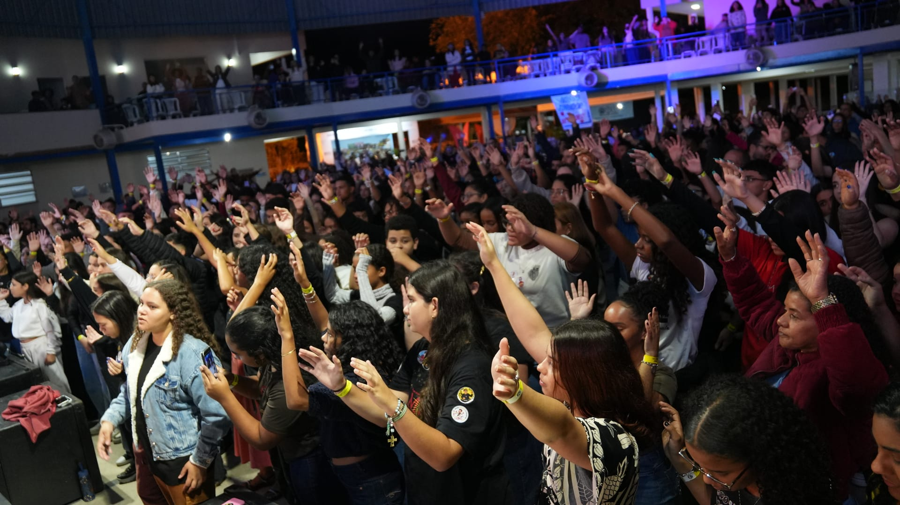

Congresso
SETA
Seguir a Trilha do Amor
O maior congresso católico da região

SETA 2026
Siga a trilha






Vem com a gente
Acompanhe datas e ingressos da próxima edição no Instagram da comunidade.
Acompanhe no Instagram